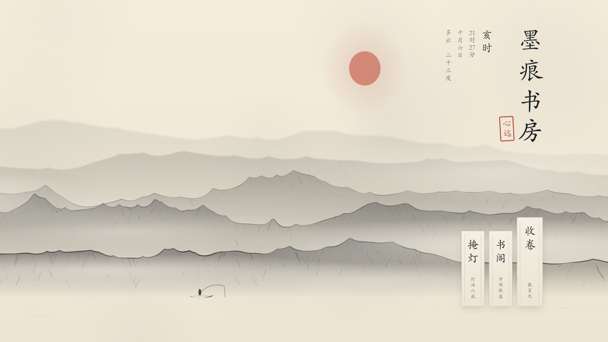
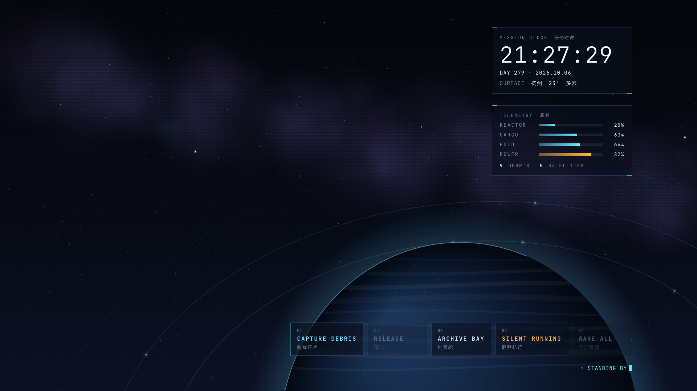
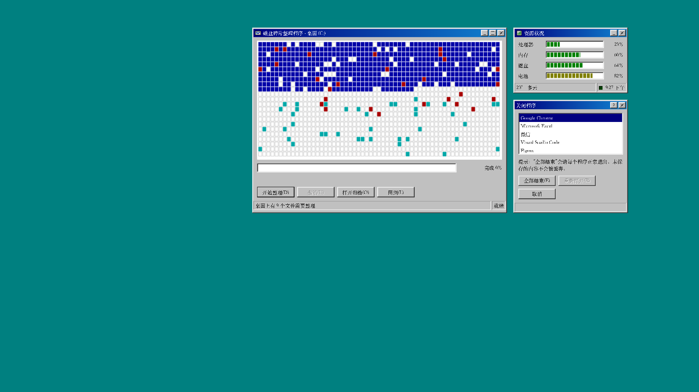

Orbit Desktop
让桌面成为一个完整的设计：壁纸、动效、小组件和一键功能属于同一个世界。散落的文件会变成太空碎片，收工会变成掩灯，整理桌面就是磁盘碎片整理。
A desktop where wallpaper, motion, widgets and one-click functions belong to one designed world. A skill for AI agents, for Windows and macOS.

墨痕书房 · Ink Study
收卷、展卷、掩灯。文件化作纸笺飞入书卷，电量是灯油。
打开演示 · Open the demo →
深空轨道 · Deep Orbit
散落文件是碎片，开着的应用是卫星，收工就是静默航行。
打开演示 · Open the demo →
磁盘整理 95 · Defrag 95
整理桌面就是碎片整理，收工是“关闭程序”对话框。
打开演示 · Open the demo →作为 Skill 使用 · Use it as a skill
git clone https://github.com/XIANYU-HW/orbit-desktop ~/.claude/skills/orbit-desktop # Claude Code git clone https://github.com/XIANYU-HW/orbit-desktop ~/.agents/skills/orbit-desktop # Codex “用 orbit-desktop 给我设计一个雨夜图书馆风格的桌面，要有一键收纳和一键收工。”